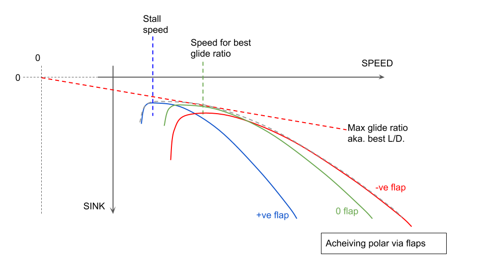
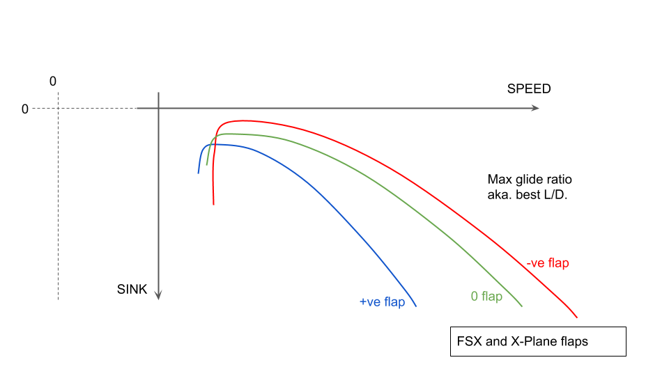
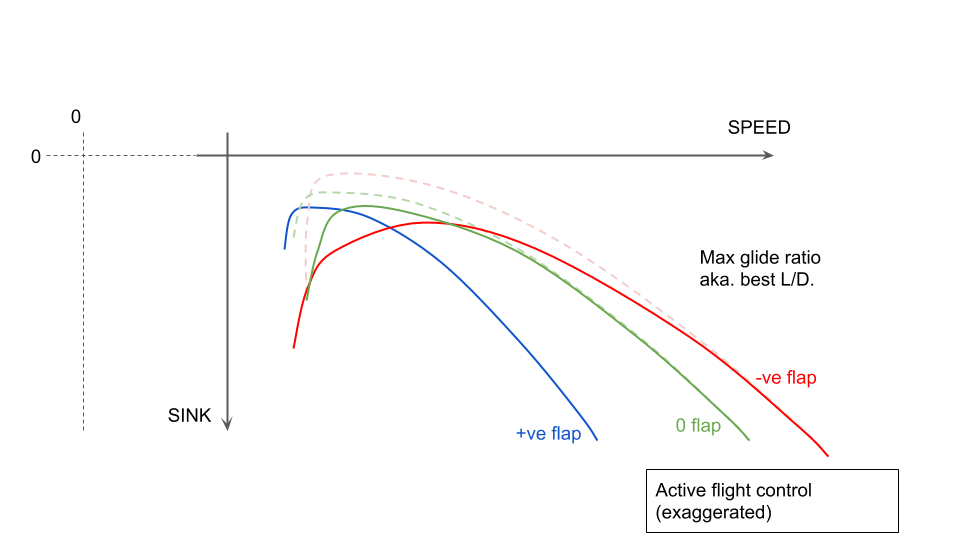
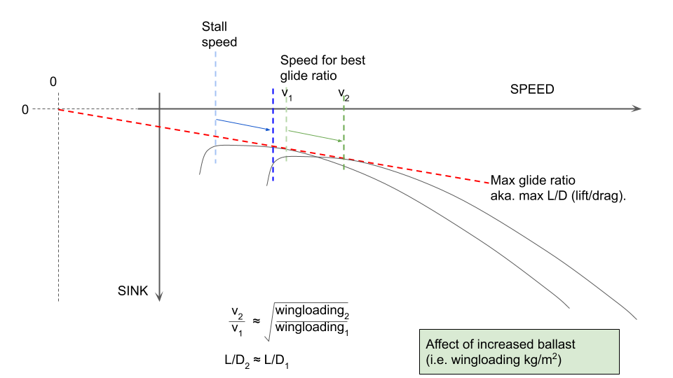
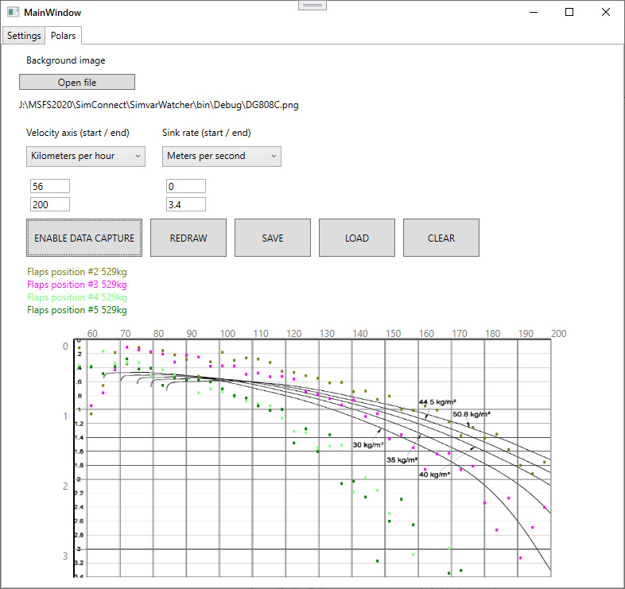

The flaps effect on the polar
In a flapped glider, the manufacture will still publish the 'polar', but that will actually be a best-performance composite of flying with the best flap setting for each speed segment, i.e. positive flaps at the low speed end, and negative flaps at the high speed end. The diagram above illustrates the multiple "flap polars" that combine to produce the best overall envelope (only three flap settings have been used for the illustration, in practice any flapped glider will have more).
Typical flap settings for a sailplane might be described (ignoring actual flap degrees) as:
L - landing flap. An extreme positive flap setting with a low stall speed, high lift and high drag for a low speed controlled approach to a landing. These will typically have the aerodynamic effect of lowering the nose of the sailplane (at each airspeed) also. Designed assuming zero ballast as that is required to be dumped before any landing.
+2 - thermalling flap for tight slow circling. Positive flap for slow circling in narrow thermals.
+1 - thermalling flap for more gentle circling.
0 - zero flap for max L/D.
-1 - cruise flap (negative) for moderate speeds faster than best L/D.
-2 - negative flap for racing speeds (e.g. 80knots/150kph +)
You can see from the illustration above how the polar curve for each flap setting overlaps with the others, and the crossing points represent the optimal speeds to change flaps.
It is the outermost envelope of the multiple flap polars which is used as the overall 'polar curve' for the aircraft.
Working with flight simulator flaps
The flap flight model implementations in FSX, X-Plane and (probably) MSFS model the flaps separately from the main wing. I.e. they are additional panels with their own lift/drag curves. For MSFS Asobo have made a great play of using the FSX flight model but increasing the number of panels that are (still independently) simulated.
It seems the consequence of this modelling is that the effect of the flap setting on the overall aircraft polar is more consistent across the entire speed range, such that the flap polars do not intersect at any speed above the stall. This means the best glide performance is only available to the overall best flap setting (normally zero) at all speeds, and it makes sense to fly the entire flight at this flap setting.
The simulated positive flap settings do lower the stall speed, so they make sense to use during a landing.
In sailplanes, flaps are ultra-high-aspect-ratio airfoils (e.g. 10 meters long and 10cm wide) which also affect the aerodynamic properties of the main wing.
Existing FSX, X-Plane, MSFS flaps work great for Cessnas and Airbuses with their 0..positive flap ranges and large square flap surfaces intended primarily for providing a very large increase in lift and drag (more than a sailplane landing flap).
Active flight control
Active flight control for sim sailplanes is the automated micro-control of the spoilers to reduce glide performance where the simulator would be otherwise getting it wrong. This was first implemented on the Wolfgang Piper / B21 ASH25 high-performance Open Class sailplane (see the b21_flaps_v4 gauge).Flapped sim sailplanes without this active control would actually be best flown by setting the 'best' flap throughout the entire flight and the flaps are irrelevant for soaring. Much worse is the fact that most sim sailplanes can be flown at low speed in the wrong flap setting and achieve huge glide ratios (e.g. 100:1). 
Using e.g. flight_model.cfg the sailplane can be modelled with (say) +2 flaps which give the correct glide at low speed, and (say) -2 flaps which give the correct glide for most of the polar curve above the max L/D speed.
At this point the simulated -2 flap setting will be giving a better L/D ratio at slow speed than the +2 setting (i.e. the +2 setting is correct at low speed, but the -2 setting is wrong). We aim to correct the low-speed -2 flap error via active flight control, more below.
The flightmodel 'degrees of flaps' used for these settings is completely independent of whatever is shown to the sim pilot, e.g. in labelling and moving the flap lever, or animating the flap deflection on the wings. For FSX and X-Plane it seems best to start with 0 degrees for -2, and move positive from there (while animating negative flap). The starting point may be an aircraft model which is animating directly on flap deflection degrees but that can be swapped for another simvar implemented specifically as part of the active flight control code.
The automated adjustment is relatively simple. Gauge code (or other embedded code) can monitor the airspeed and flap setting (i.e. 'index') and use a lookup table/formula to control the 'spoiler handle position'. Experimentation will show that the spoilers can be cracked open a small amount (try 1%) and that will be sufficient to bleed energy from the aircraft to correct the low-speed polar.
The effect of wingloading on the polar curve
As above, increased weight in the sailplane will push the polar curve down and to the right, sliding along the 'best L/D' line. In other words if a glider has a best glide ratio of 50 and ballast is added, then the ballasted glider will still have a best glide ratio of 50 but this will happen at a faster speed (and the sailplane will be sinking faster).
For the actual polar shift the increase in flying speed (and sink) is proportional to the square root of the increase in wing loading. E.g. a glider with wing-area 10.8m, wing-loading 36kg/m^2 and best L/D at 56knots (my ASW24), if ballasted with 150 liters of water (i.e. 150Kg/10.8m^2 = +13.9Kg/m^2) then the polar speed (and sink) increase is sqrt(49.9/36) = 1.18. So the new 'best L/D' speed will be 56*1.18 = 66knots.
Note: wing loading is simply a convenient way to refer to 'weight' which kinda normalises between different aircraft (of a similar type). As the the wing area doesn't typically change, adding 100kg of weight (ballast) to a sailplane with 10m^2 wing area is an increase in wing loading of 10kg/m^2 and you get used to the idea of the unballasted wing loading (say 35kg/m^2) or the max all-up wing loading (say 50kg/m^2) being broadly comparable among racing gliders although they may have different wing spans, masses, and wing areas.
Measuring the simulated sailplane polar
This entire page would be largely hypothetical if it were not for the availability of tools to measure/display the polar performance of any aircraft in the sim.
For X-Plane we have B21_Analysis

For MSFS we have SimPolars. The screenshot below is from a work-in-progress (2020-12-28) and doesn't properly represent the awesome program as completed.
